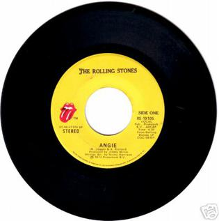

Day 8

The Rolling Stones - Angie - Goats Head Soup - 1973
Angie, Angie When will those clouds all disappear? Angie, Angie Where will it lead us from here? With no loving in our soul And no money in our coats You can't say we're satisfied But Angie, Angie You can't say we never tried Angie, you're beautiful But ain't it time we said goodbye? Angie, I still love you Remember all those nights we cried? All the dreams we held so close Seemed to all go up in smoke Let me whisper in your ear Angie, Angie Where will it lead us from here? Oh, Angie, don't you weep All your kisses still taste sweet I hate that sadness in your eyes Angie, Angie Ain't it time we said goodbye? Angie, Angie Ain't it time we said goodbye? With no loving in our souls And no money in our coats You can't say were satisfied But Angie, I still love you, Baby Everywhere I look I see your eyes There ain't a woman that comes close to you Come on Baby, dry your eyes But Angie, Angie Ain't it good to be alive? Angie, Angie They can't say we never tried